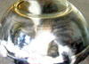
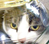

Dedicated to preserving the long lost art of body modification in housepets. |


|
|
|
|
|
|
Dedicated to preserving the long lost art of body modification in housepets. |
|
|
|
|
|
|
Updates:
25 February: Many dedicated amateurs have been sending us mail that does not require answers; they merely wish to share their unique variations on the extensive art form that is kitten bonsai. To save time, rather than thank each contributor individually, we have set up a dedicated techniques page to post all these submissions. Our deepest gratitude goes out to all the people who help broaden the community's knowledge with their correspondence.
26 January: We have been getting so much interested mail that we have not been able to reply to it all in detail while still keeping up with our many kitten orders! We do appreciate your thoughts and queries, however, so if you do not see a response on this page please check our mail drop for other people's correspondence and our brief responses.
Guestbook last updated: 14 November
Maildrop last updated: 31 May
Techniques page last updated: 25 February
Hobbyist Reports
From: Prof. Tako Sateo <tako@yuhoo.com> Date: Wed, 7 Feb 2001
First of all, let me express my most sincere appreciation and congratulations for your bonsaikitten.com site. You truly managed to express a poetic balance of ancient tradition, modern art, life and science. I was deeply touched by it.
Very humbly, may I submit to your attention a variation of your techniques which I developed for my niece Celeste, who is a first-grader and needed something for a school project about how to best care for newborn cats and dogs.
Since you cannot trust children to regularly feed their pets, I concluded that Celeste needed a self-contained unit. Also, she would have to pack it in her schoolbag, store it in the locker, etc., so even the appropriate supply of fresh air could become an issue.
An important piece of inspiration came to me when I saw one of those sealed spheres (EcoSpheres, or BioSpheres, they call them, I think) in a shop.
[...]
Dear Prof. Sateo,
Your technique is simply amazing. So much so that we thought it deserved its own page. We modestly hope that the photographs that we have selected to accompany your description do it justice in your eyes. If only every child was as lucky as Celeste, to have such a wise and skilled artisan as a parent. Please write to us again if you are ever interested in visiting our facilities, or collaborating on a future animal.
|
From: HalfSphere Kitten <halfspherekitten@onbox.com> Date: Fri, 26 Jan 2001 Thank you so much for your wonderful site! Kitticulture has always been my passion and it is with great pride that I send you pictures of my first "half-sphere" kitten. Her name is Halfsphere and here she is, "fully" grown just prior to being "hatched" from her container! She is adapting well to life outside the container and I will send more pictures soon. Thanks again for the site and the inspiration. Feel free to drop me a line with comments and suggestions and to use the pictures on your site. |
  Click thumbnails for full image! |
Dear HalfSphere,
Thank you very much for those lovely photos. I can tell by the trademark "ear lap" that you are a student of the Liu school of Bonsai Kitticulture. I am sure that upon extraction this kitten will be a spectacular example of the curvilinear simplicity that brought their style so much acclaim in years gone by. Please accept my compliments and give my best regards to your instructor if he is still with you.
General Praise and Interest
aurelius@tapay.com What a brilliant
site... Good luck with any others in the future =)
unsoly@info.net thanks for creating something so
delightful
yorkie7@heissmaul.com I am in love with this idea, can you
tell me the price of one of these masterpiece kitties?
bbtupf@sympliso.ca Please send me more information on this
fascinating concept; It sounds like the perfect gift!
josie@anwu.com I want a Bonsai Kittie! A black one with green
eyes! Any breed will do. I am just so so happy!
Thank you to everyone above and to the
dozens of positive emails we have been receiving in response to our
new web site! Web people are just the greatest, and with your support
we are sure to stay in business forever!
ml_cl_01@onbox.com I would like to
order a bonsai cat I am pleased to discover that I do not have to do
it myself. Could you e-mail me one? Who do I write my check out to,
and how much is it? Will send mailing address after I hear from
you.
biter2000@yahoo.it They are very nice! How can I have one of
these pets? How much do they cost? Do you send them by mail?
blueboys@rifni.com Hi I was wondering what the length of this
procedure is and also how much would one cost like the grey one on
your site ??
SMikes@Brownfield.com Could you put some pics of the finished
product online? or, maybe not necessarily FINISHED, but at least
after you remove them from the container. your mention of the
dodecahedral kitty REALLY grabbed my attention. i'd also be very
interested in seeing a picture of your multicat.
Of course we prefer to perform the
procedure in our own laboratories, the kittens enjoy the company of
the crowd much like ladies enjoy a trip to the beauty parlor. The
muffled meows emanating from the rows of bonsai stations let us know
that the little fuzzies are excited to conform to their new shapes,
it is a sound we love to hear. But the best sound is the meow from
the shipping carton when your finished kitty arrives in the mail.
Yes, they can be sent by mail, but not e-mail, silly! We can
send pictures of specific kittys only with permission of the person
who commissioned the animal, this is why we do not have any pictures
of finished kittens on the site. The bonsai is traditionally
considered to be a very private possession.
lobstah@amway.com Months ago, you
have masterfully shaped my kitten into a trapezoid; however, now, the
45-degree angle on the tail side is weakining, making her more of a
rhombus than anything. Although, I could reinforce the front side
with the angular clamps you sell, I'm afraid she might turn out to be
a parallelogram. Any tips?
We would be happy to surgically restore
the crisp angles to your cherished pet. In fact, you may have
forgotten that we provide a lifetime warranty on the shape of your
Bonsai Kitten. Please, pack the Kitten into the shipping container
that we will send to you via special express, and we will contact you
shortly with a time estimate for the repairs.
360pentagram@us.org Can I put a
kitten in a jar like that and keep it alive? How long do they
live?
suzie@analsagenda.com How long do this kittens need to stay in
the jar?
cgrunel@ithica.com I run a listserv for cat people, and a
majority of them believe, after seeing your site, that it is actually
possible to keep a kitten alive in a jar, as you describe.
Bonsai Kitticulture has been perfected
over thousands of years. Although crude earthenware was once commonly
used, the modern trend is to use pyrex glass. With our modernized
procedures the likelihood of premature expiration is very very small.
Using pyrex, we have discovered that many finished Bonsai Kitten
products are ready to be shipped to their new owners in less than the
traditional three months. Nonetheless, if you have not filled out the
appropriate USDA Kitticulture forms and received your permit, we do
not recommend starting your new hobby until you have done so. Why not
order one from us instead? We are happy to hear your report of the
acceptance and general acknowledgement of our practices on the
listservs. Unfortunately, many cat-luv groups do not understand our
motives and techniques, we are happy that your cat-luv group is more
enlightened.
cluver@ultrapuppy.com I have a rabbit
instead of a cat and this has inspired me to try these techniques
with young bunnies.
emu@ident.com Do you have kits for bonsai ex-boyfriends? I'd
like to stick him in a jar with a note and toss it in the ocean.
purpleham@earthwot.net Could you do a rabbit?
sxsunltd@hotmeal.com may I suggest Bonsai Horses? - so you
don't get clawed!
We are sorry to say that, although you
may think it is a simple matter to apply the Bonsai Kitticulture
techniques to other animals, it is almost never successful. Only
Kittens (Felinus Domesticus) have the proper bone structure
and chemistry to achieve a successful outcome a high percentage of
the time. We do not recommend shaping bunnies, puppies, horses, or
babies (or boyfriends, silly!). Even a plain rectilinear Bonsai
Kitten is just so lovable, it is hard to imagine why you would not be
satisfied with one of these!
John@slumnet.com your site is truly wonderful. I once tried
something very similar with one of my children, but one of my
neighbors didn't think was as cute as I did, so they called the
police. now I can use my kitten and not worry as much about the
police. Thank you so very much.
Oh my, we hope you are not serious.
Please, never, never do this to your children because the bones of
homo sapiens are simply not rubbery enough to properly respond
to the procedure, causing discomfort and future posture problems for
the child.
Limabean@Officelink.com I would like
to buy a bonsai kitten, can it be in the shape of a star?
dougjonson@ifc.org Could you please tell me how much you
would charge for a cone-shaped cat and when could I get it?
Simonxyz@press.co.uk I am fascinated by the Bonsai Kitten
concept. I would very much like a teapot shaped kitten.
rabina@ultrapuppy.com I would like to make a casting of one of
the smaller gargolyes on Notre Dame and, with proper Bonsai
Kittyculture techniques, make a little kitty gargoyle!
Such great ideas for shapes! In general,
the best vessels are constructed of borosilicate glass (pyrex),
because the thermal expansion properties match those of the final
ossified bones. However, many plastics and metals can be used with
only a small percentage increase in failure. Even then, the failures
are of a benign sort, rarely resulting in premature expiration. We
encourage you to use molding compounds available at art supply stores
to copy the shapes that catch your eye. Then, send the mold to us: we
can reproduce the shape as a suitable vessel using our reinforced
epoxy resin and glass viewing portals. These custom vessels cost a
bit more, but the final product is quite distinctive, and you can
take pride knowing that you are unlikely to walk into a party
carrying a Bonsai that looks like anyone else's!
JoyVessel@Home.com I have a bonsai
kitten . they are really nice. i got mine in the shape of a star.
bonsai kittens cant walk or anything but they can sort of move
around. we feed ours with a bottle because it cant really eat and we
have a colostomy bag hooked up for waste materials. its really not
that bad he doesnt seem to complain i think he like being like this
it sets him apart from other cats and makes him unique in his own
special way. i know this may seem strange but it doesnt hurt them at
all they just act differently. i love my bonsai kitten and would
never go back to the traditional way of kittens you all should stop
being so judgemental and accept new things mabye try one for yourself
then you would understand. --<3, Joy Vessel, owner of little
Starmew
Dear Joy, Thank you for your letter of
support. It is the satisfied owner like yourself that makes it worth
putting up with the self-righteous crackpots. Take good care of dear
little Starmew. It sounds like he is a bit feeble and sick. Most
Bonsai Kittens can walk and use a litter box, you might consider
taking yours to a qualified veterinarian. We can provide a list of
vets so that you can avoid hysterical quacks that do not understand
the procedures described here.
From: Pablo Molein <pm@pulsin.com> Date: Mon, 18 Dec 2000
I really do not like cats very much, they tend to smell funny (like a cat, or an old lady's house, or I guess a cathouse), and their fine fur makes me break out in hives. But I do like dogs. So my question is, can I get a Bonsai Puppy? Can I order him in the shape of a Pretzel or at least a Torus?
Dear Pablo,
One of my favorite stories as a child was that of "Pretzel the Dachshund." How I wish I had good news for you, but alas I do not. Feline bones are unique in that, like their visual system, they are not fully-formed at birth. This is the reason why the technique is possible with a kitten. A puppy's bones, like that of a baby, are not rubbery at birth, hence, a puppy will not bounce, and the proverbial "bouncing baby boy" is more of an alliterative quip than a reality. Genetically-engineered hairless kittens sometimes come onto the market, but they are quite expensive. You might try checking e-bay or a similar auction service to see if they are available at a discount. Best of luck with your allergies.
From: Krate Winjin <playfulkitty@crosswids.net> Date: Mon, 18 Dec 2000
Words cannot describe my joy at finding your site. You obviously share my refined taste in holiday gifts, I only hope you have gift certificates or have some ready-made kittens "in the jar" so-to-speak. Most people don't know that throwing a kitten on the floor doesn't hurt, their bones are made for this! I learned this amusing fact when I was serving in Indonesia. I also came to the realization that animals were placed on this earth for use as food, companions, furniture and conversation pieces, and I am happy to see someone in the west who admits it. They each have their own inherent shape for an evolutionary reason, but if a person wants to modify his/her own property to a new shape, that is his/her own decision to make. I'm guessing if you could ask an ordinary cat or kitten, or any other animal for that matter, if it would like to be enhanced in this way, it would tell you "I want to be SPECIAL!!!"
Dear Krate Winjin,
First, let me compliment you on your unusual moniker. I would suggest that you order one of our steel band or wire rat-trap kittens, to augment your personal space. Unfortunately, we do not have gift certificates this year, because in earlier years there was a problem with people xeroxing them and fraudulently redeeming them. (There are so many bad people out there! Many of them send us crank letters, so we know! Anyway, back to the matter at hand.) We produced so many bonsais that the local animal shelter ran completely out of kittens, which almost put us out of business! We think you will be happy to hear that we are experimenting with a new type of cat product: MultiCat, which consists of pairs of larger old cats (not suitable for Bonsai process) sewn together to form a most unusual pet. Our founders in the orient have used early prototypes as warmers for their arthritic and gouty feet. If you suffer from these conditions we may be able to help you out because we have a blue-point Siamese / standard Siamese MultiCat that we have recently successfully completed which we would be pleased to see end up in a good home.
From: <MoldysMula@aol.com> Date: Tue, 19 Dec 2000
How DARE you do such a thing to an animal! You are going to PAY for what you have done to these animals!! You will be hearing from us and the Animal Legal Defense Fund Lawyers!
Dear Molly,
We at Bonsai Kitten firmly support your goal of preventing cruelty to animals. It is very important that all procedures be done using only USDA approved Bonsai Kitticulture techniques. Our charter firmly states that no kitten shall be subjected to inhumane treatments! You can rest assured, our kittens feel no pain using the proper procedures. If you have not been licensed to verify that you know the proper techniques then you should not try this at home! Remember, you cannot trim a kitten! We would like to invite you to our facility to play with our latest collection of tetrahedral kitties, and our dodecahedral cat that is the mother of them all. Edwin A. Abbott would be so very proud!
From: Musty Hooks <mustyh@hellsloth.net> Date: Tue, 19 Dec 2000
This is true creativity!!! My one concern is: are there any known health complications? You people are inspired and I would like you to send me more information on joining your profession, it's such a creative and unusual way to make a living!!! You must also make a lot of money. Who supplies you with your kittens? How did you come up with an idea like this?
Dear Musty,
Thank you for your compliments. We are in the process of forming a number of local chapters of the Bonsai Kitten League in the US to join in with the legions already existing in oriental countries. Keep checking back for more information. We cannot claim to have invented the idea, and as our introduction page states, there is a long tradition of animal Bonsai going back for centuries. The business is cyclic, some years you can do very well, other years people want to leave their cats in the dreary normal shapes. It is sort of like hemlines and the stock market. I would say only get into the business if you really love the animals and want to sincerely give them a chance to be distinctive and special.
From: Puss <puss@barble.net> Date: Tue, 19 Dec 2000
Extremely funny!! I did the same thing to my cat except I used a full size house! What a dummy I was!
Dear Puss,
Surely you jest, where could you possibly have obtained such a large kitten? Thank you for your letter anyway.
From: FeralCompanion@aol.com Date: Tue, 19 Dec 2000
A friend sent me the URL and I've just looked through your web site. Is this site legitimate? I've never seen or heard of anything like it before.
Dear Feral,
We at Bonsai Kitten are surprised that you need to ask us this question. Furthermore, we are saddened that you claim to have never seen or heard of anything like this before, you have lived a sheltered life! I wish I could say that we are sending you a Bonsai Kitten for your very own as part of our outreach program, but we have no kittens in stock ready to send you during this busy time.
From: Dougil Sun <dsun@nix.net> Date: Tue, 19 Dec 2000
I have found that an infusion of 190 proof grain alcohol will contribute to shrinking of tendons and other cartilaginous tissues.
Dear Dougil,
Thank you for the tip! We will add it to our collection of techniques.
From: "Rust Burn" <rburn@quad.com> Date: Tue, 20 Dec 2000
Your site has been reported to the United States Department of Agriculture, The Humane Society of the United States, IP host, and InterNIC. Also your affiliation with your education (collage) is being flagged. I suggest your site be remove immediately and not repeated elsewhere. Your site has been copied entirely for further actions should they occur.
Dear Rust,
We wish to assure you that we have all the appropriate Bonsai Kitticulture permits required for this simple and painless procedure. We do not understand what you are flagellating about. And we doubt that Rust is your real name. Also, common law copyright exists on these web pages, and we warn you to destroy the illegal copies that you admit to have made or you will face prosecution for stealing our creative property.
From: "Shelfish" <shelf@hom0.com> Date: Mon, 18 Dec 2000
You cannot tell me that in this day and age this is acceptable anywhere in the world. You cannot compare the kitten to a tree! Please respond.
Dear Shelfish,
It is obvious that you have not travelled widely or you would have encountered the world-famous Bonsai Kitten and would realize the joy brought to many people (and felines) by the procedure. A kitten is like a tree in many ways, the most important of which is the ability to take and hold an elegant or unusual shape.
"Dear Sir/Madam"
You've got quite a few people severely pissed at you. they obviously have no sense of world culture, so i wouldn't sweat it.
When my Chinese philosophy class touched upon the practice of foot-binding in China, I made a point of suggesting that keeping ornate, or delicate objects in a state of miniaturization was a distinctly eastern pursuit (bonzai trees, etc.)
My prof. (who I know pretty well) skirted the subject in such a way that I knew I hit a soft spot. After all, how does a life of miniature feet compare with a life of miniature branches (i.e. bonsai trees)? The tree will live, and suffer, much longer than the woman's foot, sometimes for thousands of years.
Maybe you could use this argument to refute these people who are reacting w/o thinking. Some Chinese consider the small female foot to be as cute, delicate, and worthy of preservation as we Americans do in regard to a fluffy, cuddly kitten.
As the saying goes, "the trouble with kittens is that, eventually they become cats."
YOUR SITE IS THE PERFECT SOLUTION!!
Simba L.
Dear Simba,
Thank you for your insightful letter, sent to us the old-fashioned way. We are also pleased that our site has stimulated conversation and thought about cultural relativity and exotic standards of beauty. The future of the world is indeed bright if you are any indication of the wisdom being molded by our higher education system.
From Dr. Lirpa <lrp@lirponics.com> Date: Tue, 19 Dec 2000
Dear Sir/Madam,
I was appalled to come across your "Bonsai Kitten" site today as I searched with my young niece for Hello Kitty horticultural products. I told little Felicity that this didn't really happen to kittens, but she would not believe me. Now she is drawing pictures of felines in all manner of geometric forms, and is even taking an interest in her older brother's tongue piercing. You should consider putting AdultCheck, NetNanny, PussyPass, or some other suitable protection system on your site. How can you sleep at night knowing that children around the world will be haphazardly cramming kittens in small vessels in an attempt to achieve the "Bonsai Kitten Facial Expression" --- resulting instead in an expression of death, agony and disfigurement no doubt! As an American, I do not begrudge you indulgence in your esoteric oriental practices, but I wish you would label it for what it is: kittitorture. Then, innocent little girls like Felicity will be spared an adolescence of disfigurement through razor blades and needles in an attempt to reconcile their inner conflicts caused by your manipulation of the archetypical comfort creature the naturally-formed kitten.
Dear Dr. Lirpa,
We resent your opinions, and wish you did not have them, or at least could show enough restraint to keep them to yourself. Frankly, we at Bonsai Kitten are getting tired of receiving so many mis-informed and self-righteous missives telling us what is wrong with our site. The only consolation is the equal number of happy kittens that we lift from drab existences and elevate into cherished objèts d'art. Can't we all just get along?
From Jane Marlow <jm@fpwa.com> Date: Thu, 21 Dec 2000
You are a sick son of a bitch. You are probably Chinese, the most perverse of the Asians.
Dear Jane,
This message is typical of the bigoted and intolerant individuals that have attempted to detract from our company ever since we started it. It is a shame to spoil our guestbook with this sort of ignorant filth, but we feel it is important to let people know the kind of difficulty that immigrants to this country face in their daily lives from prejudiced attitudes, even in this modern age. It's no surprise that such a throwback would be against what we are doing, however; why, not to adore these cute little Bonsai Kittens would be downright un-American!
From <anon@somebody.net> Date: Fri, 22 Dec 2000
I would like to know more about the cramming? I have grand ideas of stuffing kittens into old medicine bottles and suchlike. Could one cram kitten and boat into one bottle? What a mystery! Yes. Perhaps I hook up remote-control device & wheels to bottle and kitten gets tour of house under my control... So many ideas flood my mind and make me sick with happiness!
Dear Anon,
That is a very interesting suggestion, that merits further study. You could probably apply for a government science grant! This sounds like an ideal way for your Bonsai Kitten to be able to explore dangerous environments in which you would never allow a normal kitty, such as the inside of the neighbour's dog kennel, or on a football field during the big game. If you send us the bottle, we can custom drill axle bearing holes and chassis attachment points with our precision equipment, to ensure proper alignment. You wouldn't want a wobbly kitty! Please e-mail us to work out further details.
From Fanny Slufy <cats@abont.com> Date: Sat, 22 Dec 2000
I was so glad to come across your site! At this time of year thousands of kitties will be given as gifts, only to be cruelly abandoned by their new owners weeks or even days later as they discover how much effort is required to take care of a normal cat. My own Christmas Miracle wish was that someone would find a way to make cats more convenient, and now here you have! I hope no one again ever underestimates the power of animal lovers. Thank you so much and please don't ever bow to the pressure of the uninformed Kittie-Luddites out there. Free speech is the most important right we have in this wonderful country.
Dear Fanny,
We agree with you completely, there is nothing more important than ensuring that people have access to the commodities they want, especially during the holiday season. Fanny, our deepest thanks go out to you for your support during this busy period for us. Rest assured, we will be supplying the increasing demand for darling little shaped kitties for quite some time to come!
From screed <screed_2001@yahoo.com> Date: Sun, 14 Jan 2001
Recently in the area in which I live there was a public outcry when a litter of tiny kittens were found in a black plastic bag on a rubbish tip, they had suffered the most awful abuse, their ears had been trimmed (cut off), so had their noses, tongues, tails, and bits of their feet. Does any of this sound familiar to you, bonsai kittens perhaps ?????? Despite the best efforts of veterinary workers all these poor little animals died after days of agony.
Dear screed,
What a simply awful story. If only the people who did that had known the correct way to manufacture a Bonsai Kitten. As we say on our site, you cannot trim a kitty! We hope one of the positive things to come out of our business and web site will be to educate the public as to the proper techniques for keeping kittens small and beautiful forever, so this form of expensive failure will never happen again.
From Lora Larkens <thegreenfairy@katamail.com> Date: Tue, 16 Jan 2001
Dear Staff,
honestly I don't understand wether this is a hoax or the real thing..... However, just in case it is all true,I am interested in receiving as many information as possible regardind a shaped kitten, since I find the whole thing really interesting and exciting. My preference would go to a black cat, possibly with green eyes : ideally two the same in two different containers would be just perfect. One question though: what sort of life span should I expect? Since the cats have been manipulated, should I expect a shorte life span then ordinary cats? Last but not least: the cost. As for many other hard to find exclusive items, I am aware that you probably charge substantial sums of money: however, although prepared to invest in something absolutely striking and ayecatching such as this, I would expect a discount since I am interested in a pair. Please, since I am approaching my birthday I would be able to tell my husband that all I need this birthday is a couple of kittens, and therefore I urge your reply since I reckon that it would take a long time to ship them to Ireland (were I live). NB: Do not worry about the fuss of the socalled animal lovers and so on........art is art no matter what and the law is on your side.
Dear Lora,
Thank you very much for your enquiries. Bonsai Kittens live almost as long as ordinary cats, and are therefore much better value as they stay small and cute for their entire lives instead of just the beginning. And yes, we definitely give volume discounts on Bonsai Kittens. Please get back to us with your exact requirements and we will give you a price quote, and do not worry about the shipping time - with Next Day Air, we can deliver anywhere in the world in under a week. Finally, we appreciate your support - we are all animal lovers, and it's just a shame that some wish to force their beliefs about aesthetics on others.
From Tom Weltanschauung <weltanschauung@hotmail.com> Date: Fri, 26 Jan 2001
I have a great idea for a line extension for Bonsai Kitten. We have a bigass dog. Lord knows what breed he is, but he's a huge adorable ball of slobbering, leg-humping fun. No one wants to exercise the big guy, though, so we bought this plastic ball contraption for him at the pet store. We fill it with kibble, and if Dingo paws the ball around vigorously for a few minutes a single piece comes out a hole as a reward. Ingenious, but he's catching on. Well, what if you sold bonsai cats that stayed in their containers permanently, and were used as dog exercisers? The dog could see the cat, smell it, maybe even taste it a bit through properly-sized holes. He could gnaw at the vessel and knock it across the room like the dickens. Dinner's inside, but how to get at it? It can't be done! Tantalized, he'll just keep trying and trying!
Dear Tom,
What an excellent suggestion! We have had many letters from owners of dogs and other higher pets lamenting their inability to obtain a bonsai puppy. With this sort of idea, now they can enjoy the beauty and practicality of the feline form in bonsai while still keeping their preferred pets as the centre of attention. One of the advantages of choosing a Bonsai Kitten as a pet has always been its understatedness and ability to add to the room aesthetics without distracting from one's carefully-selected themes, unlike other more intrusive decorations.
From Don Hisby <hisby_d@yahoo.com> Date: Fri, 26 Jan 2001
I just received a pretty, all-white dodecahedral Bonsai Kitten. Thanks. I named her Snowflake. I was wondering what shape of food to feed her. Wouldn't it be dangerous to feed triangular-shaped food to kittys with non-triangular dimensions? Surely this is an issue of aesthetics as well as nutrition, but I'm not sure I would want to endanger my kitty just to satisfy my aesthetic sense.
Dear Don,
We appreciate your concerns, but there is no dietary-shape requirement with Bonsai Kittens beyond your own artistic sensibilities. We personally consider feeding triangular food to a dodecahedral kitty to be somewhat aesthetically questionable, but as long as you don't leave excess food lying around the kitty it should not be a major faux pas. Just don't leave little Snowflake near any icosahedral objects, whatever you do!
From Megan <PinkyPipy@aol.com> Date: Fri, 26 Jan 2001
My brother David is the quarterback for our High School football team I want to know if it is possible to get a kitten in the shape of a football, no one else will get him anything like that for his birthday and if you could make it our school colors (white and green) that would be great! A Safe non-toxic way to color the kitty is to use Jell-o thats what they used for the hourse of a different color in The Wizard of Oz.
Dear Megan,
A football-shaped kitty would certainly be possible. Please see our mail drop for a positive testimonial on a baseball kitty we produced for another customer, and get in touch with us for more information. Thanks also for the coloring tip - it is important to us that all additives used with Bonsai Kittens be safe and non-toxic to the children that love them!
From Martin Harrity <martin_harrity@gtinternet.com> Date: Sat, 27 Jan 2001
I have been trying your techniques with limited success. Tell me would the removal of internal organs from the kitty before it is placed in the container make it any more maliable? Also my first two attempts went badly wrong. I attempted to reshape the kittys' joints to the desired angle by breaking the bones and resetting them. Unfortunately infection set in and the both kittys had to be destroyed. This sure can be an expensive hobby especially if people are not as talented as you! That's the 3rd kitty I've had die on me (the other one puked up while in the container and drowned). Any tips would be most welcome!
Dear Martin,
While some spectacular results have been achieved with surgical alterations, in general we do not recommend them due to the complications that can arise and the corresponding low success rate, as you have discovered. Many of the shapes that you may be aiming for can be achieved with custom constriction instead of surgery. Please get in touch with us regarding your specific visions and we will see if we can help.
From Rochelle Blair <rblair@swbell.net> Date: Sat, 27 Jan 2001
Here is a tip that may help some other hobbyists. I have had my first bonsai kitten "in the jar" now for a week, using the glass sphere that I ordered from you for Christmas, and I have found that the initial extra space has allowed the kitten to move around a bit, causing some problems. Mainly, the kitten has been able to chew on his food tube, causing a mess and forcing me to replace the tube every day. I didn't want this to go on for weeks as it was already causing the kitten's fur to look nasty and was otherwise inconvenient. I figured that since you can declaw cats, you should be able to "de-tooth" them as well. However I didn't know how to extract a whole cat's tooth, so I used a pair of ordinary household nail trimmers to cut off the sharp ends of all the kitten's teeth. It seemed to work pretty well, the cat would still try to gnaw at the tube but his new flattened little teeth couldn't do any damage to it. I hope this is of some use to anyone suffering the same problem, and thanks again for your wonderful site - I will send you a picture of my kittieball when he's finished!
Dear Rochelle,
Thank you very much for your "helpful hint". I am sure it will be useful to some visitors to our site. The technique you suggest is very similar to the de-beaking process that has been successfully used in battery chicken farms to protect the birds from each other. We prefer to inject a topical muscle relaxant into the kitten's jaws whenever we have a feed-tube-chewing problem in one of our own creations, but whatever works for the individual artist is a solution. Pet cats generally eat soft food and therefore in a perfect world would be declawed and detoothed at birth since they have no need for them, but we do what we can under the circumstances.
From Xenorg MMI <xenorg_mmi@yahoo.co.uk> Date: Mon, 29 Jan 2001
I was wondering if it would be possible to use a garden hose to make a snake shaped Bonsai kitten. I'm sure kitten would look really funky...Imagine it walking down stairs, it would be just like a slinky! Also I'm sure kitten would love the chance to sneak around the house and bite its own tail. I sincerely hope you can give me some advice. No matter how much lubricant I apply I just cannot get my kitten into the hose. Please help me! Thank you for a great and Inspiring site.
Dear Xenorg,
Extreme aspect ratio forms like a "snake kitty" are quite challenging as the kitten's dimensions usually start off too large to fit into the final constriction vessel. In these cases you often must use a malleable container and progressively make it smaller during the term of confinement. Regarding your suggestion of a garden hose, you could use a larger, low-pressure hose and tighten it gradually using a bank of hose clamps. We have had some reports from hobbyists of success with this type of kitty using polyolefin heat shrink tubing and shrinking it a little each day, but have not verified it ourselves.
From Gareth Royce <corruptor@ostonians.org.uk> Date: Fri, 26 Jan 2001
After sucessfully following the procedures so eloquently described on your site I have produced my first bonsai kitten. However, I was forced to use an antique Coca-Cola bottle, which, given the dark nature of the kittens colouring, is easily mistaken for 'The Real Thing' (As Coke were correct in saying in their registered trademark). Now the reason for my technical query: A friend mistakenly drank from the bonsai 'cola', pouring himself a fresh serving from the carefully placed waste tube at the neck of the bottle (a stylistic plus to the bonsai features I'm sure you'll agree). This has dislodged the kitten from it's intended position, somewhat ruining the display, but more worryingly has dislodged the otherwise working diverticulum. I'm hesitant to attempt the diversion procedure again as the kitten is nearing the age where further body manipulation would be a tricky procedure to perform. I would gratefully appreciate your considered opinion as to the best methods of reinstating the kitten to its intended position (thus, returning the display to its former glory) and how best to deal with the diverticulum issue.
Dear Gareth,
Unwanted post-insertion shifting of the kitten is rare when proper insertion techniques are used, but cases such as yours are difficult to anticipate and prevent. When someone has invested so much time and energy in creating their own perfect Bonsai Kitten, it is understandable that they become distressed, so please don't panic -- it is by no means an unrecoverable situation. In events such as these, it is best not to try to reorient the kitten via the use of external instruments inserted through the feeding or waste holes, as the slender probes can only exert localised pressure and will only make the kitten's appearance worse. The best results that we have observed have been achieved by replacing 5% of the kitten's diet with 100 micron powdered iron for two days, and then using a strong magnet to reposition the kitten from outside the vessel. With this technique the realignment of the rectal diverticulum with the waste hole should be achievable with no difficulty at all.
From James Cunnington <spurious_hamster@hitmail.com> Date: Sun, 28 Jan 2001
What a truly wonderful site. For years me and my family have wondered how to satisfy our children's craving for pets - a problem since we live in a high-rise apartment. Of course, my youngest daughter's constant pleas for a kitty of her own finally lead us to purchase a string of cats who, within a few weeks, had all died due to fatal falls from the windows and balcony. Me and my wife were on the brink of divorce over the matter and our local caretaker had had enough of scraping up our beloved pets...there seemed to be no solution. Even laxatives and limb amputation failed to quash the kitten's thirst for exploration which invariably ended in tragedy. And then I came across your site. Initially sceptical, I nevertheless purchased a suitably sized vase and kitten. Let me tell you, I've never looked back. We now keep four kittens in a cupboard which the children are allowed to play with once a week (but not before doing their homework!) and it has solved all our problems. Ammusingly, the little fellas have even started growing towards the shaft of light that leaks through the cupboard door! How we all laughed when we saw such funny bone-growth! My littlest boy has even started to take the kittens out for walks - he just balances all the jars on his skateboard and off he goes. "Kitten racing" has become a popular sport in my household! This is accomplished by simply sellotaping each jar to a rollerskate and launching the kittens down the stairs. I frequently bet my children's pocket money on the winner, and I can't tell you how many times I've come up trumps! Thanks again for saving my marriage and the happiness of my kids, Your very own biggest cuboid kitten fan.
Dear James,
Thank you very much for your story of your triumph over adverse living conditions. Your children will no doubt treasure fond memories of their first Bonsai Kittens for the rest of their lives. One caution, however: when organizing your "Kitten races", be sure that you are in compliance with all local and national regulations concerning gambling on animal events. You never know when neighbouring busybodies will attempt to call for investigations into your private activities, and it is best to have everything in order when the authorities come calling.
From Jessica Hendry <hhendry@bellnorth.net> Date: Sun, 28 Jan 2001
Ok I must say that usually I dont think that anything is really wrong, but being a person who favors animals over the well being of any human being, I was and am greatly. I can't believe that someone could do that to a poor hepless kitten. That's just wrong, and any preson who could do that is far past fucked as far as I can see it. I mean go ahead and post pics. of someone who has been killed and burned, but I mean cmon, poor cats don't diserve that. Like I said I far more value the life of a cat that can't do anything as opposed to a person who could, plus I never really have been much of a ppl person.
Dear Jessica,
As much as we try to tailor our products so that we offer something for everyone, we find your priorities quite ridiculous. Although there are innumerable instances of housecats feeding on their recently-deceased owners, there is simply no way that we could make a viable side business from selling pictures of "human cat food". Cats simply do not have the financial wherewithal or Web shopping abilities to keep the market afloat, and our site would quickly go the way of so many other "dot-coms" if we were to try.
From Dean <DRasmussen@aol.com> Date: Tue, 30 Jan 2001
I wish to thank you for the joy that you will bring into the lives of so many. Beside the fact that kittens grow up to be cats, what is their other major flaw? They're _FRAGILE_! Even rudimentary physics teaches us that the two strongest shapes in the universe are triangles and spheres. With a kitten properly morphed into one of the latter shapes, its owner can rest assured that the animal will survive the myriad dangers awaiting them in our uncertain world -- being run over by a vehicle, having an anvil dropped on it, shot by the neighborhood ruffian, accidentally falling off a 42 story building -- all now "non-issues". Thank you, thank you, thank you for providing "peace of mind" to so many. Unfortunately, so many of your correspondents only have "piece of mind"...
Dear Dean,
Thank you for your well-written letter, echoing the sentiments of many "kitten engineers" who have begun designing their kittens to maximize structural integrity. It is amazing that with all the advances that have been made in engineering and construction, so many people are still stuck in the "dark ages" with respect to their pets. With so many physical stresses in modern life, it's only fair to give one's kitten a head start with a strong and resilient corporeal architecture.
From Mitchell O'Sullivan <moselle@cattglobal.net> Date: Tue, 30 Jan 2001
I am writing to you once again in my capacity as the Chairman & CEO of The Humane Society of Canada. I understand that you are now hiding behind the principles of "freedom of speech", which in my view, is the last refuge of the true coward. By the way, I hope you're not offended. I am of course, only exercising my right to free speech. However, unlike your cherished version of free speech, animals cannot speak for themselves. We have taken careful note of your willingness to provide muscle relaxants and other restricted drugs for sale to the public over the internet. Accordingly, we have notified the Drug Enforcement Agency and the Internal Revenue Service and advised them of your site. Sincerely,
Mitchell O'Sullivan
Chairman & CEO
The Humane Society of Canada
Dear Mitchell,
To put it diplomatically, judging from the limited degree of coherence present in your correspondence with us, it seems that you may have been partaking of your own collection of restricted substances. Perhaps you should also bring this up with the DEA in your next communique.
From Zoe Mason <luikemia@hitmail.com> Date: Tue, 06 Feb 2001
Having just read through entries in your guestbook, I decided to add my support. Please, do not give up because of the complaints of the uneducated! Your site is a wealth of useful information, and it would be a true shame to see it lost because of the protests of the very people who need it most. Easier access to the internet has unfortunately brought with it those who would previously have succumbed to an online form of natural selection. To them I say this: if you see something you do not approve of on a website, use the keystroke Alt+F4 to voice your right to opression of free speech. I saw a human-interest segment on a news program the other day that might interest you. A dog had lost the use of its hind legs due to a crushed pelvis, and rather than reconstruct the broken bone, its owner (a veterinarian) had constructed a cart for it. By using the cart, the dog could pull its useless hind legs behind it and enjoy a somewhat normal life. I imagine you can see where I am going with this thought, but wait- my younger brother has a remote-control car which has wheels that allow it to flip onto four of its surfaces and continue to move. Also, recent advances in medical technology have allowed amputees to have some control over electronic prosthetics. So my question is this: could a kitten, bonsai or otherwise, be outfitted with the six or so sets of wheels neccessary for it to move _under its own control_? If so, this could be a possible solution for owners of bonsai kittens whose shapes restrict their motion somewhat-- or shapes of kitten in which motion of the kitten itself is undesirable. (For instance, one would imagine a perfectly square kitten would have to unfold somewhat in order to walk -as it could not roll like a spherical kitten-, or at any rate its fur would become mussed and have to be combed back into a square shape.) Another interesting variation would be a vehicular bonsai kitten outfitted with wheels, a motor and a rechargable battery pack. I have many more questions, but will leave you with this one for now.
Dear Zoe,
Regarding general wheeled locomotion in Bonsai Kittens, please look earlier in our guestbook to see our answer to the question concerning the remote-controlled kitty. As far as having the kitten itself control the drive train, although there is a lot of promising current neurological research in prosthesis control, it doesn't seem ready for deployment yet. The best bet would probably be to attach external microswitches via elastic cuffs to the kitten's leg muscles, and use them to control the motors via a simple on-off system. It shouldn't be a difficult task for any amateur electronics buff. Of course, the kitten will only be able to operate at one speed via this technique. Fine velocity control would be more difficult; perhaps the kitten could change gears via a mouth switch or similar.
From Brytton Wingfield <brytton.wingfield@sdchealth.com> Date: Tue, 6 Feb 2001
As a professional cat-juggler, the biggest challenge I face is the poorly balanced body of the average kitten. Their large heads and flailing legs make them twist unpredictably as they fly through the air. Is it feasible to make a spherical kitten? This would make my job much easier, and also would be safer and more comfortable for the cats being juggled. I would love to be able to bring this technique back to my homeland, where we have a rich tradition of cat-juggling that goes back over 400 years.
Dear Brytton,
Spherical kitties are indeed possible, we even sell a spherical constriction vessel on our sales page. We also make spherical kittens to order due to the difficulties involved, with which many hobbyists do not wish to concern themselves. However, although we would be happy to manufacture a set for you, we think you should consider a more avant-garde shape. Spherical balls are the least crowd-pleasing of a juggler's ensemble. If we may be so bold as to make a suggestion, club-shaped kittens would be a more worthwhile addition to your act. In addition to the awe their highly elongated shape would inspire from the audience, they could also be fitted with special low thermal conductivity mantles to enable them to double as torches for nighttime fire-juggling segments. I think it's safe to say that this would be guaranteed to earn a standing ovation.
From Kane MacAnish <wyrst@ename.com> Date: Tue, 6 Feb 2001
As a licensed kitticulturist, albeit of the German Shuttbert school, I must say it's great to see the practice gaining so much cultural recognition, thanks in large part to your site. That said, while I do wish to praise, my primary intention in coming to you today is to ask for help. I, too, base a business around my kitticulture practice. I specialize in the incorporation of the traits of other species, for those with an eye towards the exotic, yet active, cat. Lately, I've been receiving an incredible many requests of late for rabbit-based customizations, and I'm having some difficulty with some aspects of the modification. I've found an implanted Klein-Schuder tensile lattice to work wonders for stretching the ears, and follicle transplantation has been almost farcically easy, but I've found the alteration of the legs and lower torso to be a bit of a challenge. Earlier kittens have encountered some difficulties with spinal alignment, and I've been unable to replicate the characteristic "hop" that my clients request. While their adoptive families report that this in no way reduces the love they feel for the adorable little things, I can't help but feel that I owe it to the kittens, and to my clients too, to do better. Now, as my previous methods has made obvious, I come from a distinct school of kitticulture, but I'm not so bound to tradition as to preclude the adoption of useful techniques, and I'm wondering if you might have any suggestions on how to address these problems. Any help would be appreciated, and I thank you in advance for your time.
Dear Kane,
Not that we don't appreciate all the messages we receive from hobbyists, but it is always a special pleasure to receive a letter from a professional of one of the more culturally distinct schools of kitticulture. Unfortunately, in this case it makes it all the more unfortunate that we are not able to be of direct assistance, as we are form rather than function specialists. The best we can do is to point you to the site of another group who seem to have much more experience with rabbit-style mobility in cats. We hope they can be of more help than we are able at this time.
From Enricolo M. Ferrari <e.ferrari@mcvlink.it> Date: Wed, 07 Feb 2001
Just few words from me, living in Italy, I hope this could be useful for other customers. I was amazed to look at your site and decide to combine the technique of the Bonsai Kitten with the Italian creativity. As you probably know, we Italians like to eat spaghetti and play mandolino. So the idea was: why not to create a Mandolino-Shaped kitten? The task is not easy: you first of all must find a cheap mandolino, because you are going to destroy it when the cat is growth, I tried everything, but there is no way to pull out the cat without damaging the mandolino. You must however modify the mandolino, since it hasn't holes. Provide a front hole for the kitten insertion and a rear little hole, for the kitten "colostomy bag" that you must realize in advance as you suggested (was it in advance, right? I couldn't realize it once the kitten was inserted). You can leave the strings on the mandolino, some little weekly plays seems much liked by the cat. I discovered he really liked "o sole mio", but maybe it's just my romantic mood that makes me think to that. You can hang the mandolino with kitten inside as a nice exhibit in your house or simply leave it on a table. Once growth is complete and cat is extracted, I suggest to add the strings on kitten furs with Super Glue, otherwise you'll not fully understand what that shape is. Please use just few drops of Super Glue and keep it far from cat's eyes. I also noticed that in this way the cat sometimes likes to play with the attached strings, providing a very funny complete effect. I'll provide pictures of all the above as soon as I repair the scanner.
Dear Enricolo,
Thank you so much for your report on your unique and charming Bonsai Kitten! Music has long been suspected to help living things grow and flourish, and you have developed a brilliant way of combining the process and the result. I am sure your kitten enjoyed a blissful youth filled with the soft lullabies you played on it as it developed into its final form, and that it now loves its built-in toys. More importantly, I am sure it and you are a big hit with those lovely young Italian ladies. Bravissimo!
From Aidee Bailey <aideebailey@hitmail.com> Date: Thu, 08 Feb 2001
Wow! a friend of mine told me about your site, and I'm ashamed to say I didn't belive him. "Bonsai kittens?", I said, "never." How wrong can one be? I understand about the varying shapes one can attain with the correct procedure and of course the correct tools and equipment, I am, however, intrigued by the colouration of said kitten. Is it possible to grow a "Metallicat?" Or are they only available in the standard colours (tabby, tortoiseshell etc.)? I would be most interested to find out. In regard to all the people who have written in threatening your site, or claiming disgust disbeleif or shock, well. I can only assume these are the same type of poeple who claimed that listening to heavy metal involved selling your soul to Lucifer or commiting random acts of suicide. Narrow minded, bigoted, blinkered fools each and every one. Anyone who disagrees is welcome to e-mail me for an adult and grown-up conversation anytime they wish. All the best for the future, may you grow many happy and shapely kittens.
Dear Aidee,
Non-standard colouring is indeed available, by both internal and external dyes and custom coatings. Please contact us with your specific ideas and we will see what is most appropriate. For a metallic finish, depending on the desired sheen and the shape of the kitten we would probably select an advanced powder coating with weather-resistant polymer matrix. Thanks also for your words of support, in reality our enlightened fans such as yourself far outnumber our closed-minded detractors, but every letter such as yours gives us uplift.
From Misty Dawn Wisemore <mistydawn@mvta.org> Date: Thu, 8 Feb 2001
Hello Bonsai Kitty People! Did you know that Bonsai Kitties are all the rage here in "Big D" (Dayton)? As the director of Lost & Found Operations here at the MVTA, I must alert you to a potential problem with bonsai kitty popularity! You see, the unique portability that make the little fuzz-boxes so desirable is causing a lot of people to bring their kitties with them when they get on the subway which means that a lot of the little purr-squares (as we call them) get left on the train! While I do adore cats, my office is begining to smell like one of those weird old lady's houses that you hear about! Please tell your website vistors to please be careful with these wonderful animals! Smell Ya Later, Misty Dawn
Misty Dawn Wisemore
Vice President, Director of Lost & Found Operations
Miami Valley Transit Authority
Dear Misty,
Thanks for the warning! Come on, people, be careful with your "purr-squares"! With all the time, energy and love that goes into the creation of each and every one, a Bonsai Kitten is far too precious to lose!
From Castruccio Castracani <castruccio@libera.it> Date: 9 Feb 2001
Gentlemen,
Being, as I happen to be, an Italian, I should be ashamed of reading in your mail drop so many foolish shortsighted messages coming from my country. These are insults to our history in particular and to human intelligence in general, and I hope that you will not draw the conclusion that everybody in Italy shares the primitive opinions of the above mentioned folks. I have not wasted your precious time and mine just to state these obvious (to an unprejudiced mind) opinions; I am professionally interested in our techniques, since I lead a project of felinoplastic in my Department. Of course, yours is an artistic mission, we (as far as our work is concerned) are not devoted to aesthetics, but rather to science, but this does not prevent me, as a person, to appreciate the beauty of a toroidal kitten. I hope you won't feel offended (I am sure you will not) if I dare to correct one of your statements; answering to customers wishing to bonsai animals like horses rabbits and children, you say that only Felis Domesticus is apt to be bonsaied. This is partially true: my laboratory is still echoing with the explosion of laughter we produced when we read about people believing you can bonsai any mammal, even former boyfriends. Certainly you cannot bonsai a cow or shape without serious harm the penis of a horse into a cone but still is true that not only cats, but also a good variety of felines can be modeled almost ad libitum. Panthera Leo, for example, shows good rubberboned characteristics up to ten days of age, and the Slovenian lynx (Felis Lynx Slovenica) has probably (the studies are still ongoing) the best shaping properties among all its feline relatives, and can be at least partially shaped up to one year of age. The aim of our studies is to achieve the transmigration of the rubber genes to humans. By 2150 there will be 78000000000 people on our planet, and simply there is no space enough for everybody, so the governments will be forced to shape the children in reduced cubic form to provide to everybody the possibility to grow (intellectually if not physically) in a crowded world. Maybe the same people who now attack you will find this horrible and antihuman; maybe they have better ideas, like killing three children over four to feed their obsolete cats. Fortunately all this people will have disappeared since long at the time the program will start, and won't be able to hear the laughter of their grand-grand-grandsons looking at the old family snapshots ("what a funny and stupid shape Granny used to walk around"). Solidarly yours, Dr. Prof. Castruccio Castracani
Dear Prof. Castracani,
You are absolutely correct and we hope you will excuse our use of the occasional coarse generalization on our site. As you know, our efforts are aimed at the consumer market, so we just wished to convey to interested amateurs and those previously unfamiliar with the art that the domestic cat is the only commonly available housepet that is able to be shaped in this fashion. We would certainly be happy to cater to wealthy clients desiring the exotic felines you mention, but of course would require them to supply their own animal due to the difficulties involved in private procurement. Thank you very much for your letter and best wishes for your important research.
From Alan K. McSween <mcsween@picbell.net> Date: Fri, 09 Feb 2001
Dear Bonsai Kitty...
I've had my Bonsai Kitty for 6 weeks now and I couldn't be a more satisfied customer. I have had two dinner parties since receiving my "B-Kitty" and have proudly featured it as the centerpiece on my dinner table! It is just amazing how I have become the envy of all my friends and associates! I do have a couple of Kitty-care tips to share but I did not see a spot on your website where I could post them, so I am just going to include them here so you can post them whenever you get around to creating your "Bonsai-Kitty Kare Korner" section.
Tip 1. Unwelcome Nocturnal Mewing
This seems to happen more and more as your B-Kitty gets older and the best
way I have found to deal with this little problem is to drape the Kitty-Jar
with two heavy, thick moving blankets just around sundown. I'm pretty sure
that the darkness calms the B-Kitty and lulls it into a peaceful night of
slumber.
Tip 2. Fogging in the Kitty-Jar
This happens when you keep the ambient room temperature too low for your
Bonsai-Kitty. I've been keeping the thermostat at about 97 degrees F. in
the room where I keep my B-Kitty and I think the problem is pretty much
licked now.
Tip 3. Clawing Sounds.
These little noises may be cute but they can be distracting while discussing
the latest DotCom failures over dinner. I solved this problem by applying a
little petroleum jelly on the end of a slightly bent coat hanger and, while
inserting it throught the 1/4 inch air hole, apply a dab or two to the
inside of the Kitty-Jar just under the Kitty's little foot pads! Works like
a charm!
Thank you again Bonsai-Kitty for all of the delightful conversations that have been sparked by my new B-Kitty. My mother-in-law seemed very envious (and her birthday is just around the corner), so be expecting a new order from me soon! Thanks again for a wonderful product! Sincerely, Alan K. McSween
Dear Alan,
We appreciate your care tips, and are sure that many readers will find them useful. With regard to your third point, many bonsai hobbysists choose to have their kitten declawed prior to insertion. In general, there is no reason not to have your cat declawed, whether you choose to bonsai it or not. Declawing is a simple and inexpensive process that prevents a number of annoying cat behaviours, and in addition to a more tranquil household, your other precious possessions will be safer for it.
From Melinda Waller <MelindaWip@aol.com> Date: Sat, 10 Feb 2001
Dear Bonsai Kitten Webmaster,
I am the mother of 14 year old Necropimp who sent you a threatening E-Mail earlier in the day. I want you to know that I do not endorse his behavior and that I have insisted that he apologize for threatening you. However, please be informed that your graphic images can cause emotionally disturbed children to react with horror. My son is under the care of a psychiatrist and I must monitor what he sees. Again I apologize for his behavior (making threats to you). Thank you, Melinda Waller
Dear Melinda,
We graciously accept your apology on behalf of little Necropimp. We have to wonder, though, whether your son's aberrant behaviour could possibly be traced to the unorthodox name with which you chose to christen him. In the event that you should have additional children in the future, we recommend giving them more normal names in order to start them off on the right track in life immediately.
From Thomas McMagus <thomas@thekodekrew.com> Date: Sat, 10 Feb 2001
While I believe you are well meaning, I think it highly irresponsible of you to give so many details about the procedures of feline molding. Sure you pay lip service to warning people without the proper training against attempting mammalian bonsai, but certainly you realize that most, if not all, young people have a mindset of "It can't happen to me." and are going to disregard the advice.
Let me relate my family's unfortunate experience, in hopes it will deter others from attempting to create their own amateur feline bonsai. It started innocently enough. Like so many children, our 14 year old daughter brought home a stray kitten and begged to keep it. Like so many parents, we consented, but with the usual admonishment that she had to take care of it. Of course, before long, she came to realize that it is no small matter to tend to a kitten's constant need for feeding and attention, not to mention the ancillary damages they can cause. The evening she came home from school and found one of her ballet slippers shredded on the night of her recital, was the last straw. We suggested taking the kitten to the Animal Rescue League. After that, we didn't see the kitten again, and assumed she had taken our advice.
Little did we know, that somehow, somewhere, she had come across information about the art of kitten bonsai and had decided it was the solution to her problems. (I don't think it was your web site that she got the information from, as this was several years ago and I presume predated the creation of your site.) She placed the kitten in a 1 qt mason jar, taking care to provide breathing and feeding tubes. She correctly super glued the kitten's rectum. Sadly, her vocabulary was not sufficiently developed to understand the meaning of "rectal diverticulum" and hence she did not realize anything was amiss when this failed to occur.
From what we have been able to gather from talking to her after the tragic accident, all seemed to be going well for the first month or so. The kitten had fully and evenly filled the confinement vessel. Then, one evening, wishing to "play" with her pet, she picked up the container. Apparently, the internal pressure had reached the bursting point and the slight jar of being picked up caused it to explode, hurtling glass shrapnel in all directions. My beautiful young daughter lost three fingers on her right hand, was blinded in her left eye and left with a long jagged scar across her left cheek. One minute a cheerleader and one of the most popular girls in her class - the next, a disfigured outcast.
The healing process was long and painful and the hospital costs soon exceeded the limits of our insurance coverage and became a financial burden. When she graduated, it quickly became clear it wasn't going to be any easier for her to find employment than it was going to be for her to attract a husband. She finally found work at Disneyland, as the greeter for the Pirates of the Caribbean ride, but only after having her left leg amputated at the knee. (Another expensive consequence of this tragedy. We had to go all the way to Laos to find a "doctor" who was willing to amputate a healthy limb attached to a teenage girl. Then complications set in, the hospital bill went through the roof and our hapless child had to work off her treatment bills at a local brothel. It was a trying 16 months for us all.)
So the next time you are at Disneyland with your children and see a peg-legged, one-eyed pirate named Bambi, tell them, "That could be how you end up if you fool around with kitten bonsai."
I hope this will serve as a warning to all the young readers at your site who may be tempted to "experiment." And please, for the sake of the children, don't be so forth-coming about the actual techniques used in creating these art pets. Something so whimsical and delightful shouldn't be allowed to turn into a life altering tragedy for another unsuspecting family.
Sign me, A heart-broken father, Santa Cruz, CA
Dear Thomas,
What a shocking cautionary tale! We can only offer our sincere condolences to your family, and hope your ghastly story serves as a lesson to all our readers that no material possession is worth a little girl's beauty, even a gorgeous bonsai kitten. We have a duty to our customers and hobbyists to preserve the information on our website as a resource for all, but we urge every parent out there to carefully monitor all of their children's animal experiments. The dangers are very real.
From: Richard York <netcase@greek.com> Date: Sat, 10 Feb 2001
Dear BonsaiKitten,
I am a high school biology teacher in a rural town in north Georgia. I must say that your methods have been an inspiration to me, but it makes my heart sad to know that those poor little kittens will have no one to play with for the rest of their lives. My two kittens, Tabitha and Precious were inseparable, I simply could not keep them apart for such a long time. I decided to go a step further and try my hand at bottling the two kittens in the same jar. Using your detailed instructions, I now have my own Siamese Twins (they're Siamese cats . . . isn't that cute?). The result was simply fabulous. The only problem I encountered was when the Special K wore off for the first time. There was a terrible struggle within the jar and it nearly fell off of the table (I suspect that the jar I used was slightly too big for this purpose). I had to keep them tranquilized for the first few weeks until their muscles atrophied. Now they just snuggle together contently. You've brought such joy to my life and to the lives of my students who have voted to make Tabitha and Precious the new school mascots. I already quite anxious to start on my next project, and I was wondering if you could give me some advice. I would like to create a living model of a kitten for use in my biology class. I plan on using your Bonsaikitten techniques to preserve a partially dissected kitty in a jar. I figure that I can tranquilize the kitty during the surgery and then simply "install" it in the jar when complete. In my previous kitten dissections, I have found that many of the major organs fall out of place when moving the cat around my classroom. I am hoping to use a small enough jar so that I can place the kitten inside the jar in such a way that the glass hold the kitten together for easier transportation. This would be such a remarkable teaching aid, I simply must give it a try. Has anyone on your staff attempted a similar experiment? I would be very anxious to hear any advice that they might have.
Sincerely, Dr. Richard York
Dear Dr York,
The idea you suggest is remarkably similar to a product on which we are currently working, and intend to bring to market soon. We are sure there will be a large amount of interest, in both the educational and consumer sectors, for a kitten whose internal organs are visible. Unlike your proposal, however, our method will require no surgery and will thus have a much higher success rate. I am sure you will understand that due to our patent applications we cannot disclose the exact procedure, but I can tell you that it involves a two-stage process: permanent removal of the kitten's fur with a chemical depilatory agent, followed by extended treatment of the kitten with a mixture of lipotransportable bleach and mild organic acid activator to render the skin transparent. An optional third dye step can apply a range of translucent colours to the skin, enabling the kitten viscera to be viewed in a pleasing hue. The kitten can then be shaped just like any normal domestic feline. We plan to call this new product line "iKitty". If your needs are not immediate, we recommend waiting until we begin shipping these new model kitties. As an "early bird" request, we have placed you on the list of those eligible for one of the first release iKitties, and at an attractive discount.
From Graham Colaman <cola_man@hotmail.com> Date: Sat, 10 Feb 2001
My bonsai kitten
Bounds with the grace, speed, and guile
Of a cinderblock.
Dear Graham,
art predicts progress
rectilinear kittens
it's hip to be square
From jason iota <iota@ion8.com> Date: Sat, 10 Feb 2001
After studying information from a variety of sources in regards to kitticulture, I have started my own personal bonsai kitty project. I am attempting to form my kitten into a thin, rectangular shape, not unlike that of a book or a piece of paper. My goal is to have a kitten that I can store in my briefcase, suitcase, or laptop-bag so that I can enjoy feline companionship wherever I go. I first tried to form my kitten in a .5" tall, 8" wide, 10" long fiberglass container that I made, but I found that this was not going to work due to the height. The best method, so far, has been to form the kitten in a 1.5"x8"x10" container for one month, then move to a 1"x8"x10" container for one month, then finally into my .5"x8"x10" for one month. I'm still on my third month, but I hope that soon my kitten will be out and ready for travel! Do you have any other ideas on how to get my kitten any thinner? I would like to get down to .25" or even 1/8" but I am unaware of any way to do so. Have you ever been able to acheive this kind of result?
Dear Jason,
Contrary to other kitten shapes, we have found that our best results for generating flat kittens have been achieved without full enclosure. Rather than go to the trouble of finding consecutively flatter containers, and haveing to carefully extract, re-insert and re-intubate the kitten every few weeks, we have produced spectacular results by simply sandwiching the kitten between two rigid sheets, held together with G-clamps. The clamps are tightened slowly over the course of the forming, allowing very thin kittens to be manufactured. For the sheeting we recommend transparent plexiglas or perspex, so that the kitten can be admired during development; glass can also be used but the pressure must be monitored more carefully to prevent cracking. Two caveats: the sheeting used must be thick enough (for plastics, we recommend at least 0.5") to avoid bowing around the centre of the kitten which would leave an unsightly bulge in the finished product; and special care must be taken to tighten the clamps evenly every day to ensure the kitten is perfectly flat rather than wedge-shaped. We have found that the limiting factor in resulting bonsai kitten thinness is the diameter of the feeding tube (in our case, 0.3").
From Catbert The Evil HR Director <Catbert@ggbcorp.com> Date: Sun, 11 Feb 2001
Your site has been an inspiration to me! I have finally realized that I am not actually hideously deformed; I am merely a Bonsai Kitten in the "oblate spheroid" form. Thank you for your wonderful illumination of my youth!
Catbert
Dear "Catbert",
What an amusing letter! It gave us all a hearty laugh. It's nice to know that even in the serious business of kitten modification, there's always the opportunity to enjoy a joke about ourselves. Thanks for the clever message -- it's back to work for us!
From Jason McCardy <jasonmccardy515@hotmail.com> Date: Sun, 11 Feb 2001
I understand both sides and I now support your art. When I first saw your site, I knew it was for real and was so shocked I passed it around to my friends for a sick joke. But I read more and more about what you do and I can understand the logic. I can see that you do this so these cat's can be loved more than a normal cat would. And when I read you get the kittens from animal shelters, I can see no wrong in what you are doing. I feel sorry for the distressed cat while its in the container, but afterwards it will be it's owners pride and joy, loved forever and cared more than an average cat. I have no-comment about your multi-cat experiment, but suffice to say humans born like that have happy lives. Anyone stuffing cats into jars or other containers in malice and planning to throw the cat away later should go to hell. But I think bonsai kitti culture is nice yet hard to understand or explain.
Dear Jason,
Your thoughtful message has been selected as our "Mail of the Month"! We know that our products and techniques are novel to many, but with so many open-minded people such as yourself visiting our site we are confident that we are well on the way to bringing the beauty of the bonsai kitten into households all over the world. But we are sure that no-one would ever throw away a finished bonsai kitten -- they are just too desirable! For writing the best e-mail of the month, as soon as our electronic Shopping Cart system is ready you will be sent an online Gift Certificate for $20, redeemable on any Bonsai Kitten merchandise. Thank you!
From Benjamin Morphy <bamorphy@kent.edu> Date: Sun, 11 Feb 2001
I was considering making a siamese bonsai kitty. Have you had any experience with this proposal? My initial idea is to use two tetrahedral containers, give the kittens a few weeks in those to 'shape up' and then take them out and sew them together and put them in a larger single container for the remainder of their gestation. What are the issues involving infection, etc. Plus i would like them to be able to sexually stimulate and mate with each other so that i can start a whole family - see if mom and dad can teach the children how better to deal with their new shape then bonsai kittens could soon overtake regular traditional felines. Especially siamese bonsai kittens that can roll around the floor at high rates of speed.
Dear Benjamin,
We do indeed have experience, please see references earlier on this page to our MultiCat product now in the prototype stage for young, shaped kittens as well as the previous old, "remanufactured" variety. For shaped MultiCats, at this stage in development it looks like the evidence favours attaching the kittens before any shaping is done, as a two stage shaping can lead to visually unpleasant artefacts around the join lines. In addition, we would not recommend breeding your MultiCat, as after such a particularly painstaking and difficult shaping process it would be a shame to haphazardly deform the structure with pregnancy.
From malcolm jones <mfj@dcs.ed.ac.uk> Date: Mon, 12 Feb 2001
We came across your site the other day and were totally blown away by your tiny little kittens. We were so excited about the thought of one of these kittens that we went out and bought a kitten and a jar of jam, which we swiftly emptied. At first the kitten would not go in and seeing as we can't be bothered reading your site to find out how to do it properly we just used a big wooden mallet to ram the kitten into the bottle. We assume this is not the correct insertion method as the kitten did not survive the process; but was the problem with the jam jar, the mallet or the kitten?
Dear Malcolm,
In addition to your obvious lack of a kitticulture license, due to which you should never have made this attempt in the first place, you should never hit a kitten with a mallet! We would have thought this was obvious, but it seems we need to specify this explicitly. When applying percussive compression to a kitten during the insertion process, a shock-absorbing rammer should be used between the mallet and the kitten, as you are desiring to exert force rather than shock. A good material is a closed-cell foam such as that used for the "foam noodles" commonly found as swimming pool toys. This information and much more is presented as part of the intensive license-preparation Kitticulture Courses we offer, we strongly recommend you sign up for one before making any further attempts.
From Svantje Granger <svantje@sofcom.com> Date: Mon, 12 Feb 2001
Dear Bonsai Kitten team!
I am very fond of your web site and your method, so I tried your method at home. A local vet helped me with the medical aspects of this, so everything went fine, but now we have a problem. Choosing a shape I was particulary fond of, I used a fish-shaped glass. Sadly, I just bought it from a local store; I didn't recognize the glass was made of perspex and is completely unbreakable. Now, the opening at the rear end of the fish is far to small to let the kitten out, and we don't know what to do. Sawing the form apart will almost certainly injure the kitten, since it fills out the form almost completely; hurting the kitten would break my heart. The doctor already suggested to to put the kitten to sleep, but if I can avoid that, I will. Do you have any suggestions? I think the kitten will not survive being inside the fish form much longer.
Thanks a lot, Svantje Granger (Berlin, Germany)
Dear Svantje,
Please don't put your kitten to sleep! The kitten can be retrieved without serious injury. You will need a pressurised oxygen supply, set to deliver oxygen to the kitten at around 1.35 atm pressure through a breathing tube. This will displace the organic solvent that you will be using to dissolve the perspex (acetone or chloroform will work) ensuring the kitten's survival during the process. You do not have to wait for complete dissolution of the fish-shell, just manually peel it apart when it has softened sufficiently. Be careful to use an insoluble breathing tube, of course! The extracted kitten will be at a slightly greater cancer risk from the solvent skin contact, but that is much better than abandoning your precious fish-kitty project and those months of work.
From Cheryl Peirce <cheryl.peirce3@sympatico.ca> Date: Mon, 12 Feb 2001
I am currently a vet tech student and find this VERY disturbing. A fellow student sent this to me with the same concerns. How do you know that this will not cause any long term effects. And the fact that you are using super glue to close the anus off so it doesn't create a mess is absolutely disgusting. Aren't you worried about health concerns? Your intro talks about how people use head and foot bindings to make themselves appear more attractive. They are people and have the choice to do that to themselves. An animal is unable to make that decision. And not only would they be in pain but with them at such a young age where they are developing their bodies, I could not see them being able to properly develop their muscles while trapped in such a container. Kittens are not like trees in any way! You wouldn't pierce your animal, so why would you want to do this to them.
Dear Cheryl,
This is a prime example of one of the few messages we get objecting to our products. If a moment was taken to think things over more carefully, before engaging the e-mail program, we are sure that you would realise the answers yourself. The super glue is applied with health as the primary concern -- it would hardly be healthy for the kitten to be surrounded by its own excreta in the jar, would it? We find it difficult to believe that you would be so cruel as to suggest shaping an unsealed kitten. As to your other complaints, the fact that the cats are not equipped with the skills and intelligence to improve their own shapes themselves is exactly why we must do it for them, and animal piercing is very common -- haven't you ever heard of ear tags, used by farmers and conservationists everywhere? Please consider things more seriously before mailing us again.
From Chuck Frasier <chuckfrasier@yahoo.com> Date: Tue, 6 Mar 2001
I was thinking the other day about the growing demand for Bonsai Kittens and still can't figure out how you could possibly keep up with all of the orders. Then I got to thinking. I've been reading about growth hormone lately as an anti-aging therapy. I was also thinking about how pliable a kitten is and that it's probably largely due to growth hormone levels being particularly high in a young kitten. Then I started thinking. If you give a Bonsai Kitten growth hormone I.V., speeding up the process of it's development, you could really start crankin 'em out. This would enable you to produce a larger number of Bonsai Kittens more quickly and therefore better serve the public and the ever growing demand for Bonsai Kittens. Then, if you apply some of the more current techniques that have been shown to increase lifespan in animals, you could make a Bonsai Kitten live much longer thereby decreasing the immediate need for replacements. Let me know what you think.
Dear Chuck,
Your comments are very intuitive; there is definitely a place for feline growth hormone in commercial kitten bonsai. However, it is not used to speed the shaping process as you describe. While growth hormone can be used to make kittens build mass rapidly, the process of skeletal and muscular conformal takes the same amount of time regardless of the tissue growth rate, as this is actually under the control of other factors. For example, the calcium deposition rate controls bone density, which cannot be rushed lest the kitten be left with a fragile skeleton through premature osteoporosis. Where growth hormone does prove useful is in the production of high-birth-weight kittens for use in specialty containers having a large internal radius (see our gallery for an example). In preparation for these orders, we put a pregnant female cat on a regimen of 25mg/day fGH 5 days a week plus an increased protein diet on these days, and a carbohydrate boost on the other 2 days. Since we return the mother cat to an unaugmented diet after giving birth, we haven't noticed any definitive lifespan increase, but if our customers have the money to place their Bonsai Kitten on permanent growth hormone supplements we certainly don't recommend against it.
From Shane Cezanyi <shanecez@anotheri.com> Date: Wed, 28 Mar 2001
I dont understand just why, exactly, would i want a kitten, or anyone else, with a spherical head, or body? What is wrong with all the people who write to you? I like kittens with sharp angular features because it is a bigger challenge (not that i resent your site of course). Also, i found that whilst doing your technique, i found a way to seemingly get my kittens health better. By placing a small mesh around the ventilation, i suspected that it would reduce the amount of germs getting in, when i did so, my kitten got out several weeks later and meowed, incredibly smoothly, and looked extremely healthy, as it used to have a shaky meow and always looked sad. I also found that the smaller the container, or whatever you want to call it, it is the more tickilish it becomes (it happened to me anyway).
Dear Shane,
At Bonsai Kitten, we are firm believers that "to each his or her own". Unlike some who wish to force their preferences on others, we encourage all artistic expression - whether people like spherical, French Bezier curved, rectilinear or acute faceted kitties, it matters not; the important thing is that people are exercising their creative impulses to produce a unique pet that will be treasured by all who experience it. Moving on to your germ screen, maintenance of proper hygiene at all input tube openings is certainly important. It is unlikely that mesh alone would have much of a barrier effect against micro-organisms, though, so we imagine you also swabbed or dusted the screen with an antimicrobial agent such as chlorhexidine or sulfathiazole? We recommend a solution of chlorhexidine and iodophor (10,000ppm), applied periodically to all external openings. Finally, as to your report of the response of your kittens to tickling, how simply fascinating! We haven't heard any correlations on that subject from any of our other correspondents, so if anyone out there has observed increased or reduced tickle effect in your own Bonsai Kittens, please write and let us know! We're sure that's just the kind of thing kids would want to know when making the crucial decision of the shape of their extra-specially-wished-for birthday kitty!
From Mark in Ohio with a cat <BykerBoil50@aol.com> Date: Thu, 12 Jul 2001
Back in July of 1999 I visited my cousin down in colorado. His neibors had a bonsai kitten in the porch in the backyard. I saw the kitten and an abused pitbull locked up in a small cage. The last day I was in colorado I took that cat when the neibors were not home. When I had the glass cube I took the poor kitten out and threw the cube in to there back yard. The cat is now fully grown and living a good life. When ever my cat sees a glass cup or bottle it gets very scared and I have to calm my cat by letting him outside in to the open. Kittens are meant to grow up and become a strong and healthy cat that will live about 20years. But being locked in a small container till it dies, is just like being sentenced life in prison for doing absolutely nothing. The cats are innocent, and born to live an adveturess life. Please respond to this letter,please.
Dear Mark,
While we at Bonsai Kitten take a very dim view of the theft of personal property, if you are sure that the neighbours were mistreating the kitten by intending for it to die before the shaping process was complete, we find your actions somewhat understandable. Especially if you had observed them to abuse their pit bull as you say, it seems they were not the kind of people that should own any pet, even a low-maintenance variety such as the Bonsai Kitten. However, you should have confronted the neighbours directly to ensure that your assumptions were correct before resorting to such illegal and potentially immoral actions. In addition, although you may have acted in good conscience by rescuing the kitten from its apparently neglectful owners, your premature removal of the kitten from its containment vessel may have contributed to the erratic mental state you have observed. If a kitten is only partially shaped at the time of removal from a rectilinear vessel, it is likely to exhibit a range of unsightly deformations such as bulging faces and rounded corners, that would have disappeared after more time "in-jar". It is hardly surprising that such a cat would display outward manifestations of insecurity and inner shame when it comes across potential shaping vessels and thinks of the perfect appearance that has forever been denied it. In future please allow such a kitten to complete its shaping process so that it might pursue its adventurous life with the crisp angles it deserves.
From Raid Flaming <rflaming@written.com> Date: Fri, 14 Sep 2001
As a kindergarten teacher in suburban Illinois, I am always looking for unique educational opportunities. I believe that your products would have a profoundly positive impact on my class. The children have a fairly good grasp of simple shapes (triangle, square, and so on). But I have been searching for some time now for materials to introduce the subject of solid geometry. Children naturally love animals. Can you please send me pricing information for a complete set, consisting of: one sphere, one cube, one cylinder, one pyramid, and (if feasible) a dodecahedron. Please bear in mind that I am writing on behalf of a public school, and our funds are limited. I will probably have to reach into my purse to cover the costs. Do you have an educational price list? Are there discounts on bulk or group orders?
Dear Raid,
We apologize for not responding to your inquiry earlier, but as a result of increased mail restrictions and shipping times in recent months we have suffered quite a backlog of both requests and finished kittens. This has caused some customers to cancel their orders while the animal has already commenced being shaped. However, what is our bad luck is good fortune for customers such as yourself, as we are now able to offer a substantial discount on bulk orders of regular polyhedral kittens, in addition to our normal generous educational discount. Furthermore, we will include an attractive velvet-lined walnut display cabinet in which to place the kittens when not being handled by the students, at no extra charge. The cabinet has a robust, lockable plexiglas door and will keep the kittens safe and comfortable in even the rowdiest of classrooms. We wish you well in your teaching; the children truly are our future, and simultaneously introducing them to two areas of unparalleled beauty -- mathematics and the art of feline bonsai -- can have only beneficial results. You have our gratitude.
Contact the Bonsai Kitten webmaster!